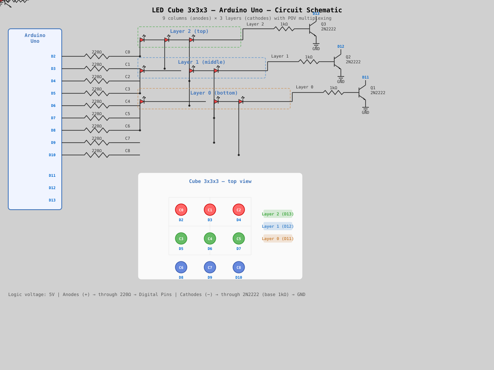
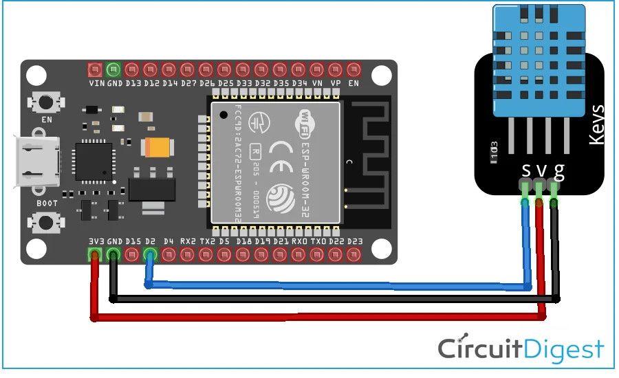

De la breadboard
la prototipul funcțional
Fiecare proiect include scheme de cablare, codul sursă complet și lista de componente. Alege un microcontroller și începe să construiești.

Cub de LED-uri
Construiește un cub cu 27 de LED-uri folosind multiplexarea pe straturi și animații POV pe Arduino Uno.
Kit-uri de pornire
Ghid complet pentru kit-urile Super Starter Arduino Uno și Mega 2560 folosite în cercul de informatică.

LED intermitent
Hello World pentru ESP32: aprinde și stinge LED-ul integrat folosind MicroPython.

Temperatură și umiditate
Citește datele senzorului DHT22 / DHT11 pe un ESP32 și afișează valorile în consola serială la fiecare două secunde.

Server web temperatură
Servește citirile senzorului DHT22 / DHT11 prin Wi-Fi pe o pagină HTML stilizată găzduită de ESP32.
Nod LoRaWAN
Configurează un Pycom LoPy4 pentru rețeaua LoRaWAN EU868 folosind activarea ABP și transmite payload-uri periodice.
Prezentare generală
Resurse pentru dezvoltare în C / C++, MicroPython și Piper Make pe Raspberry Pi Pico.